Monte Albán: Morgens raus aus der Stadt, hinauf auf den Berg. Um 500 v. Chr. begannen die Zapoteken, die Kuppe rund 400 m über dem Tal einzuebnen und darauf ihre Hauptstadt zu bauen – über 1.000 Jahre lang das politische Zentrum des Oaxaca-Tals. Die Gran Plaza ist gewaltig, der Rundumblick über die drei Täler noch mehr. Seit 1987 UNESCO-Welterbe, zusammen mit der Altstadt von Oaxaca.
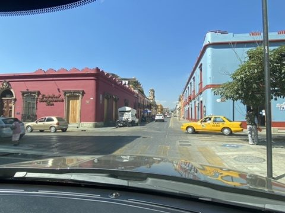
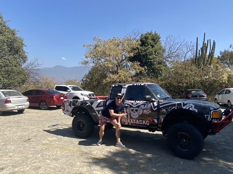
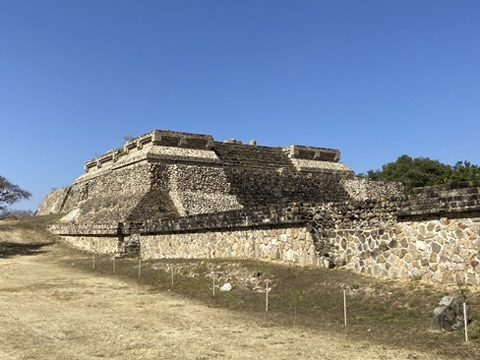
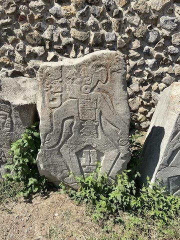
Die „Danzantes": Über 300 Steinplatten mit verrenkten Figuren. Früher als Tänzer gedeutet, heute eher als Darstellung besiegter, geopferter Gefangener.
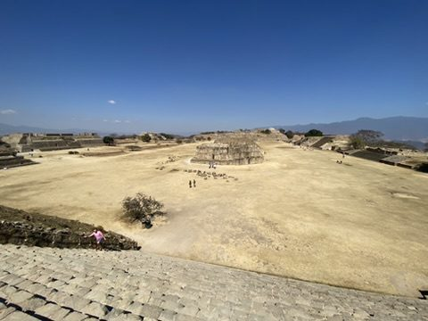
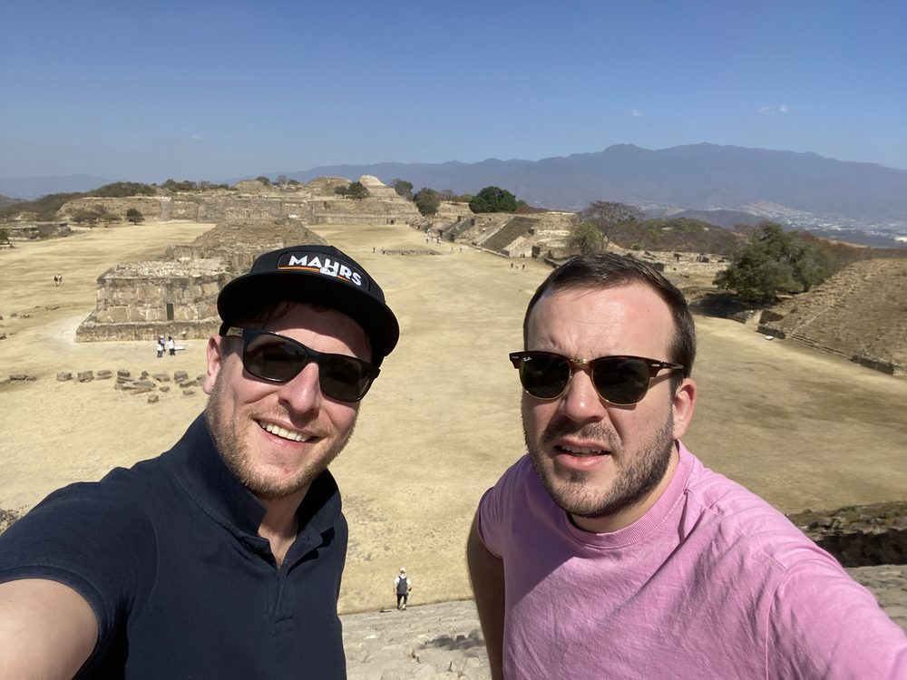
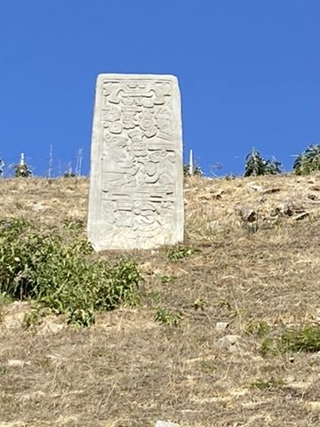
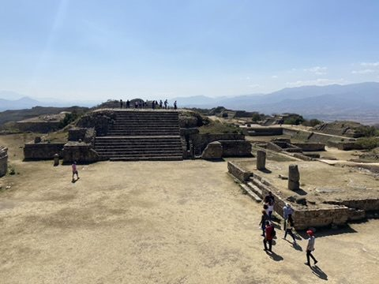
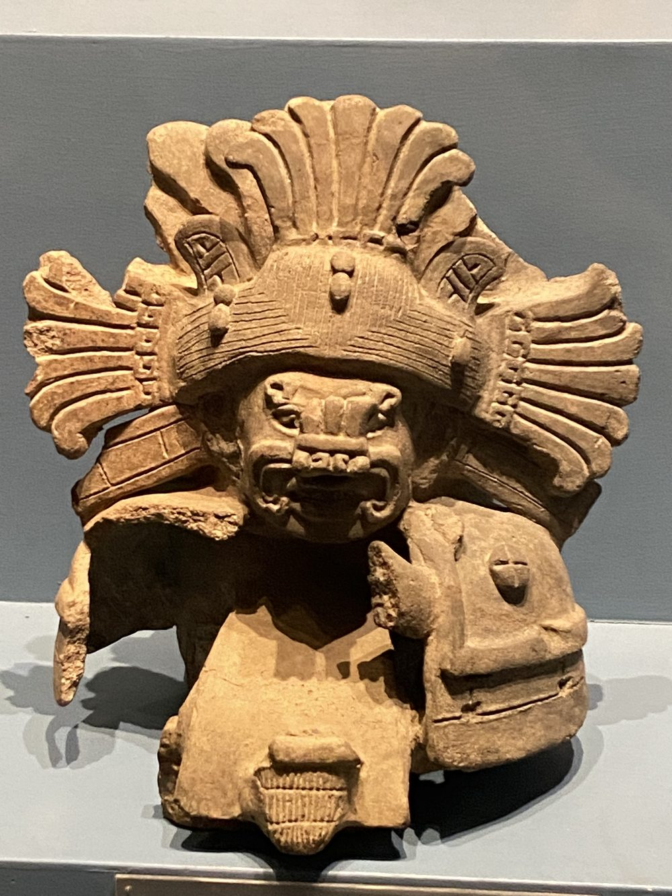
Im Museum der Anlage: zapotekische Grab-Urnen, oft mit Gottheiten wie dem Regengott Cocijo.
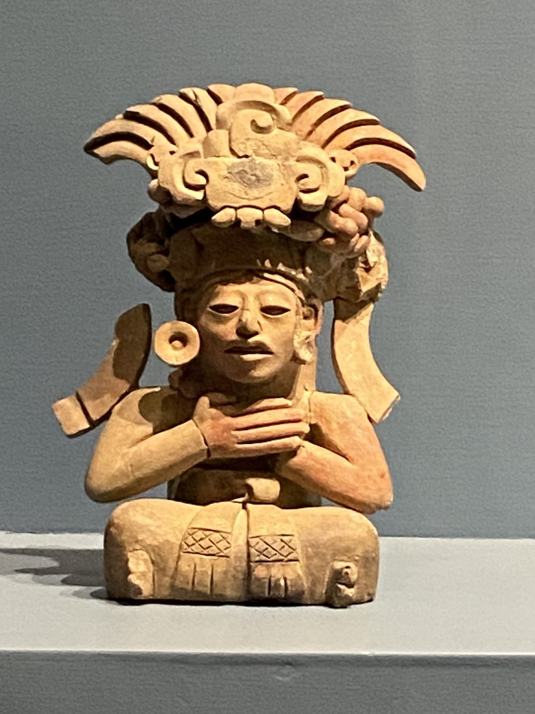
Abends: Santo Domingo: Zurück in der Stadt über die Fußgängerzone Macedonio Alcalá zum Templo de Santo Domingo. Außen schlicht und massiv – gebaut, um Erdbeben standzuhalten –, innen explodiert der Barock: vergoldete Altäre, Stuck bis unter die Decke.
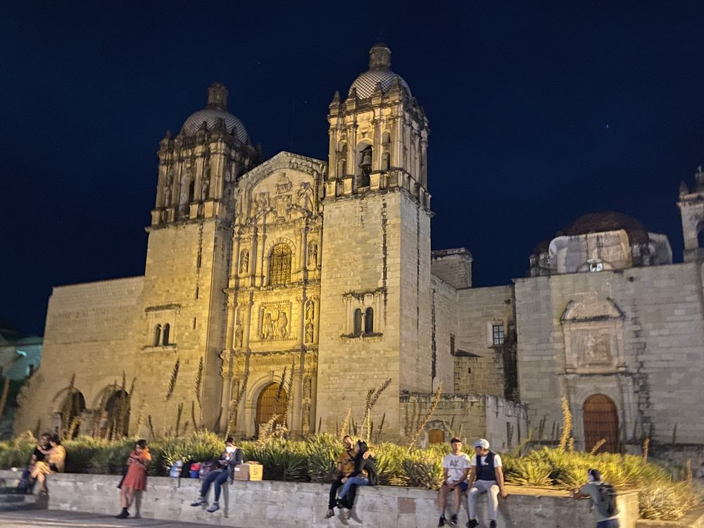
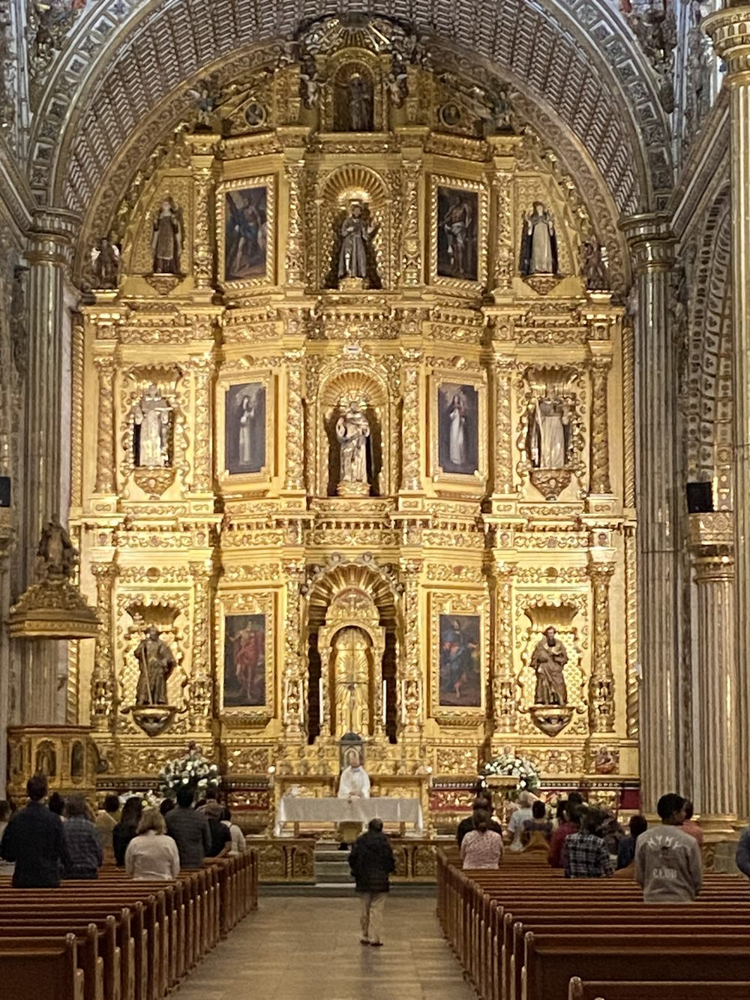
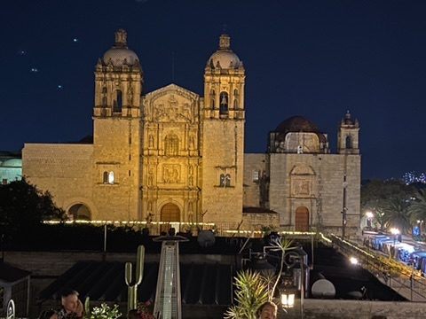
Abendessen: Oaxacas Küche lebt von Mais, Chili und Geduld: Tortillas aus blauem Mais, Salsas, die frisch im Molcajete (Steinmörser) am Tisch angerührt werden.
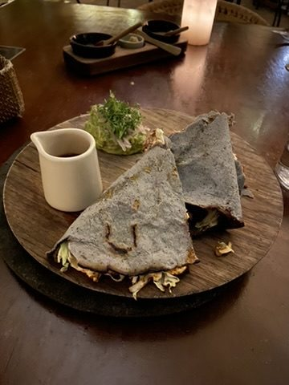
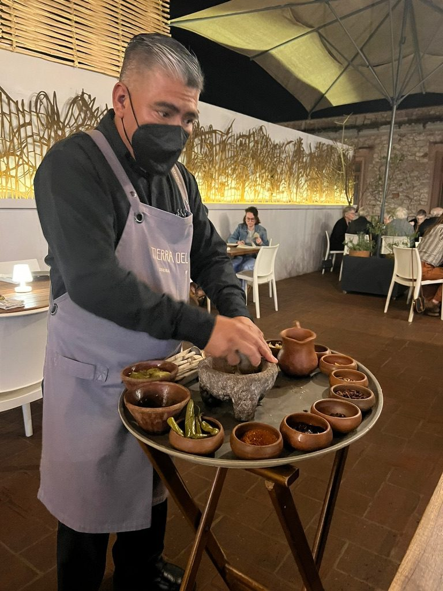